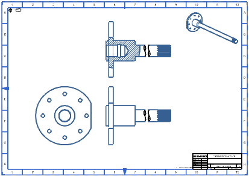

Estimated time to complete: 6–10 minutes
In this activity, you will:
Create permanent, associative alignments between projected views.
Create a break-out section view from a view that contains a view break.
Change the line width of the visible lines in selected drawing views.

Open the Create a Break-out section view with a view break activity.